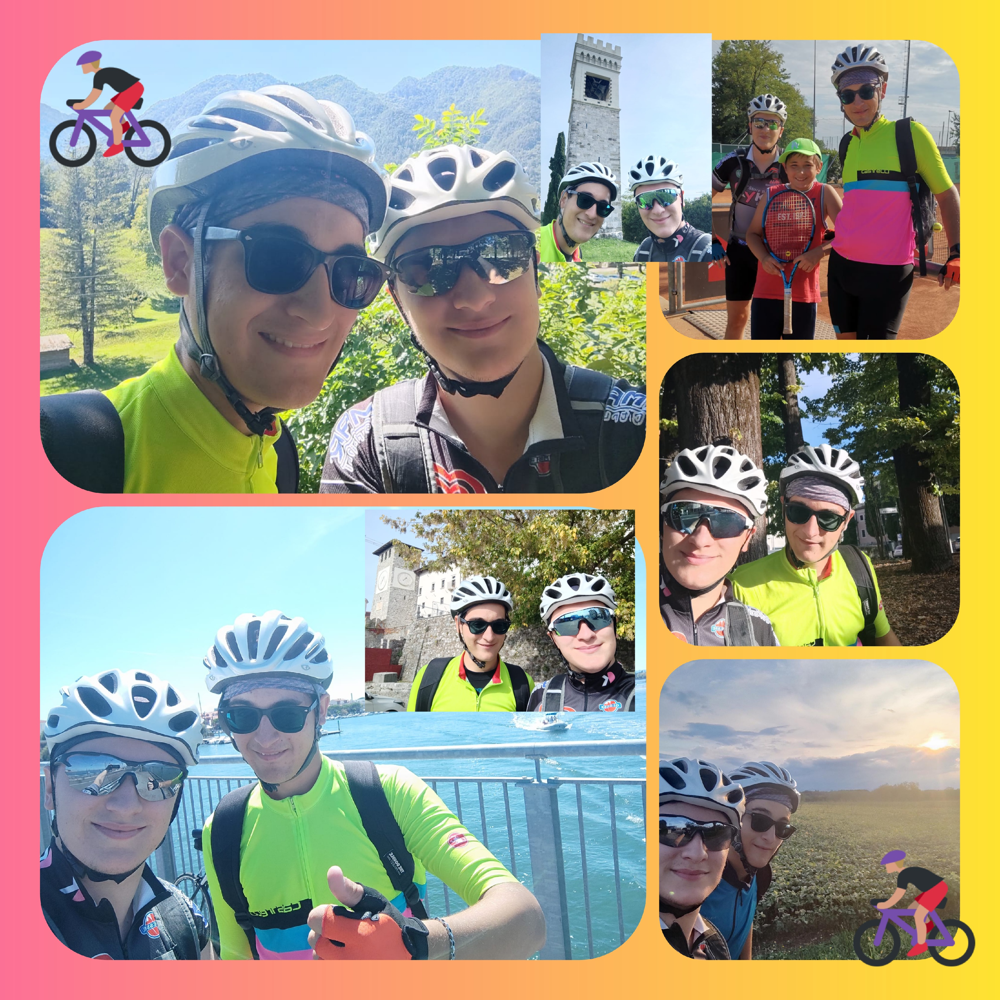
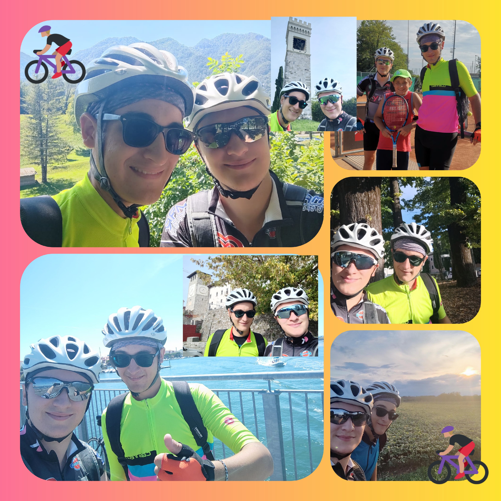

| Data | Numero Percorso | luogo | distanza percorsa | |
|---|---|---|---|---|
| 2 Luglio | 1 | Cisterna + Beriolo (Corsa Velocita') | 49 | km |
| 9 luglio | 2 | Grado | 121 | km |
| 14 luglio | 3 | Latisana + San Vito | 69 | km |
| 16 luglio | 4 | Da Carnia a Laghi di Fusine + Bled | 120 | km |
| 17 luglio | 5 | Da Bled a Carnia | 111 | km |
| 20 Luglio | 6 | Flaibano (corsa Velocita') | 30 | km |
| 25 Luglio | 7 | Bressa + Bertiolo | 51 | km |
| 28 Luglio | 8 | Varmo + Talmassons | 50 | km |
| 3 agosto | 9 | Ariis + Talmassons | 50 | km |
| 5 agosto | 10 | San Daniele | 50 | km |
| 9 agosto | 11 | Rivignano (corsa Velocita') | 31 | km |
| 10 agosto | 12 | Rivignano | 28 | km |
| 11 agosto | 13 | Cisterna + Barazzetto | 50 | km |
| 13 agosto | 14 | Spilimbergo | 52 | km |
| 14 agosto | 15 | Tramonti | 117 | km |
| 16 agosto | 16 | Ariis + Bertiolo | 51 | km |
| 17 agosto | 17 | San Daniele | 51 | km |
| 31 agosto | 18 | San Daniele + Fagagna | 62 | km |
| 2 settembre | 19 | Varmo | 23 | km |
| 3 settembre | 20 | Ariis | 37 | km |
| 5 settembre | 21 | Ariis + Basiliano (corsa velocita') | 57 | km |
| 6 settembre | 22 | Ariis + Fraforeano | 48 | km |
| 7 settembre | 23 | Rive D'arcano | 54 | km |
| 10 settembre | 24 | Pordenone | 66 | km |
| 12 settembre | 25 | San Daniele + Fagagna | 63 | km |
| 13 settembre | 26 | San Martino al Tagliamento | 30 | km |
| 19 settembre | 27 | Pinzano | 82 | km |
| 22 settembre | 28 |
Pordenone (corsa velocita')
andata ritorno |
56 | km |
| 24 settembre | 29 | Sedegliano - Basiliano e Bertiolo (corsa velocita') | 42 | km |
| 28 settembre | 30 | Cisterna | 46 | km |
| 1 ottobre | 31 | Da Tarvisio a Villach - Velden e Klagenfurt | 112 | km |
| 3 ottobre | 32 | Pinzano | 71 | km |
| 5 ottobre | 33 | Lago di Cornino | 81 | km |
| 9 ottobre | 34 | Colloredo di Monte Albano e Castello di Fagagna | 74 | km |
 


totale km 2085
km medi percorsi 61,32